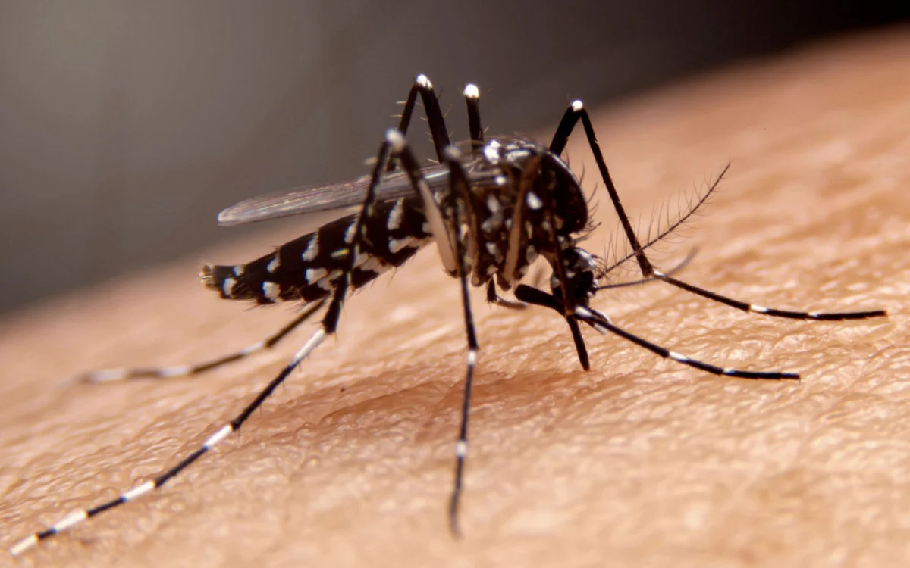

<!DOCTYPE html>
<html lang="pt-br">
<head>
  <meta charset="UTF-8">
  <meta name="viewport" content="width=device-width, initial-scale=1.0">
  <title>sobre a dengue</title>
  <link rel="stylesheet" href="style.css">
</head>
<body>

</body>
</html>
<body>
     
    <section class="conteudo-principal">
      <h2 class="titulo-principal">como controlar a dengue<span>_</span></h2>
      <div class="botoes">
        <button class="botao">tudo sobre a dengue</button>
      </div>
      <div class="abas-textos">
        <div class="aba-conteudo ativo">
            <h3 class="aba-conteudo-titulo-principal">passo a passo de como combater a dengue</h3>
            <h4 class="aba-conteudo-titulo-secundario"><p> dengue é uma doença febril aguda sistêmica de origem viral. Nas últimas décadas, o número de casos de dengue no mundo tem aumentado dramaticamente.</p>
              <p>A incidência global da dengue aumentou acentuadamente nas últimas duas décadas, representando um desafio substancial para a saúde pública. De acordo com a Organização Mundial de Saúde (OMS), em 2023, foram mais de cinco milhões de casos reportados e mais de 5 mil mortes notificadas em 80 países. A ocorrência de múltiplos surtos já se espalha para regiões anteriormente não afetadas.</p>
              
              
             <p> Nas Américas, entre 1o de janeiro e 11 de dezembro de 2023, foram notificados 4,1 milhões de casos suspeitos de dengue, incluindo 6.710 na sua forma graves. Embora a dengue seja endêmica na maioria dos países da América do Sul, México e América Central, e nos países do Caribe, no segundo semestre do ano passado houve um aumento alarmante no número de casos da doença.</h4></p>
             <p>A Dengue clássica tem sintomas como febre alta já de imediato, com temperaturas acima de 38,5ºC, dores intensas de cabeça, nos olhos e nos músculos do corpo inteiro. Em metade dos casos, manchas avermelhadas pelo corpo surgem em torno do 4º dia da infecção. São sintomas comuns também calafrios, náuseas e vômitos. Existem quatro vírus que podem ser causadores da infecção: DENV-1, DENV-2, DENV-3 e DENV-4.</p>
             
            </div>
    </div>
</div>
    </section>
    <script src="main.js"></script>
  </body>
  </html>
  